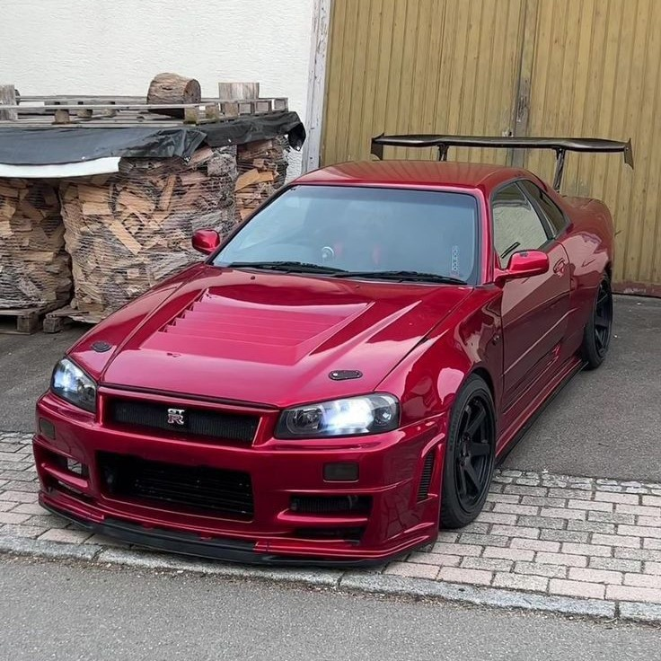

One of my favorite cars, SKYLINE GT-R R34
The Nissan Skyline GT-R R34 is an iconic Japanese sports car built by Nissan from 1999 to 2002. Powered by the twin-turbo RB26DETT inline-six and featuring ATTESA AWD, it became a legend for its performance, tuning potential, and cultural impact worldwide.
